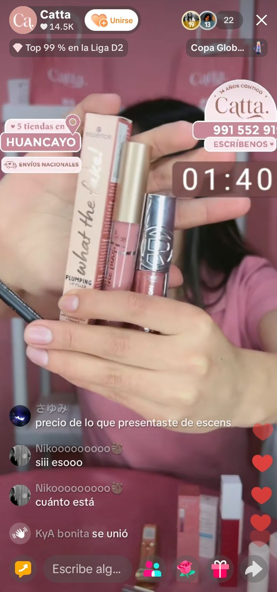
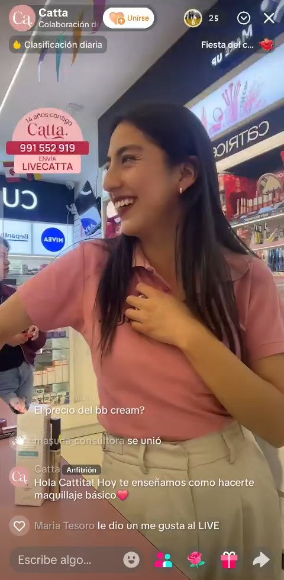
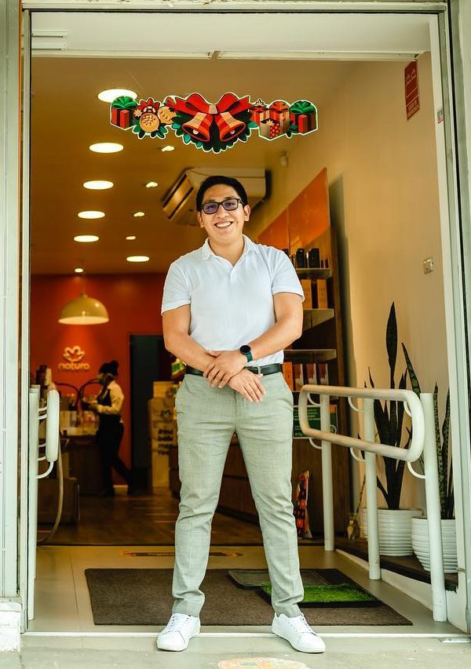

masuna_consultora
Imagen: set de live de Tiendas Catta
El live no es un canal de ventas. Es el corazón de tu ecosistema de ventas.
Construimos tu canal de TikTok Live para que descubra clientas en todo el Perú, las convierta en comunidad y las haga volver a comprar. Con un sistema antes y después del live, para que nadie se escape.
Descubre si calificas para crecer con nosotros Con 8 preguntas en 5 minutosS/4.090 vendidos en 21 días con el live de Tiendas Catta S/204 por hora de live 82% del tráfico sin pauta
¿Te suena alguna de estas?
empresario_trujilloQuiero crecer a nivel nacional y no sé cómo 😩
Juan34Hago lives, pero no cierro muchas ventas
IndustriaMFPagar publicidad en redes es caro, quisiera explorar otras formas de vender online
tienda.arequipaEntra gente al live, pero se va en segundos
mili_store¿Cómo sé cuánto me vende el live?
calzados.luchoMis clientas compran una vez y no vuelven 😕
No es tu producto ni tu cámara. La mayoría usa el live como un catálogo, y por eso no funciona.
Prenden la cámara, muestran el producto, leen el precio y repiten. El algoritmo nota que la gente se va en segundos y deja de mostrarte. El live no es una vitrina: es una conversación.
Leer la ficha técnica
22–28 s
Clase en vivo con una marca
109 s
Datos del piloto con Tiendas Catta, 2026.
Cómo una cadena de 5 tiendas en Huancayo convirtió su live en un canal de venta.
Mes 1 · junioS/600
Mes 4 · septiembreS/4.090
= +582% de crecimiento del canal en solo 4 meses
| Mes | en soles |
|---|---|
| Jun | S/600 |
| Jul | S/454 |
| Ago | S/870 |
| Sep | S/4.090 |
Sep (rayada): venta con el código del live. Jun–ago: venta registrada del bot.
| Mes | segundos en promedio |
|---|---|
| Jun | 55,7 s |
| Jul | 42,8 s |
| Ago | 55,0 s |
| Sep | 57,9 s |
Desde la mentoría a la host (21/09): 68,5 s.
| Mes | personas que comentaron |
|---|---|
| Jun | 687 |
| Jul | 506 |
| Ago | 850 |
| Sep | 1.357 |
Datos del piloto con Tiendas Catta, 2026. Junio: venta registrada del bot de WhatsApp. Septiembre: venta con el código exclusivo del live, del 10 al 30.



«Antes había mucha improvisación: no había una estrategia detrás de lo que queríamos trabajar digitalmente. Hoy tenemos más presencia digital y ejecutamos la estrategia como debe ser. Lo que más me ha gustado es que ha sido acción, mucha acción. Los resultados llegaron más rápido de lo que esperaba, eso me sorprendió.»
«A otro dueño le diría que esto no es una moda que va a pasar. El live va a ser uno de los principales canales de venta, incluso por encima de las tiendas virtuales.»
José Cabanillas, CEO de Catta
Cadena retail especializada en belleza y cuidado personal, con 14 años de experiencia y 5 tiendas en Huancayo. Partner comercial de marcas globales como Maybelline, Essence, Catrice, Salerm, Byphasse y muchas más.
También en Lima: Lusan, calzado industrial
720 personas conectadas a la vez400 leads en 3 mesesS/0 en pauta
¿En qué consiste el sistema Live Commerce de ?
Es un ecosistema phygital: lo digital (el live, el grupo de WhatsApp y un bot con IA) y lo físico (tus tiendas) conectados en una sola línea. El live descubre y atrae. Cada persona que pregunta queda capturada como lead. La venta se cierra donde la clienta prefiera: en el live, por WhatsApp o en tu tienda. Y la comunidad la hace volver.
-
«Nadie ve mis lives.»
Estación 1, Descubrimiento: Que el algoritmo te encuentre.
Lives constantes y un video corto que anuncia cada tema. TikTok te muestra a público nuevo de todo el Perú, sin pauta.
-
«Entran y se van en segundos.»
Estación 2, Atracción: Conversa. No leas la ficha.
Una host entrenada que enseña y conversa. El algoritmo premia lo que retiene.
Captura de leads La host invita al chat a escribir por WhatsApp para recibir precios, promos y el catálogo.
-
«Preguntan y desaparecen.»
Estación 3, Nutrición: Que el live no termine en el live.
Un grupo de WhatsApp y un bot con IA que responde catálogo y precios a cualquier hora.
Captura de leads Quien escribe queda registrado con su número: el bot con IA le responde y le da seguimiento.
-
«No sé cuánto me vende el live.»
Estación 4, Conversión: Mide el live como a una vendedora.
Un código exclusivo del live registra cada venta: en el live, por WhatsApp o en tu tienda.
Captura de leads El código marca qué ventas nacieron en el live, aunque se cierren en tu tienda.
-
«Compran una vez y no vuelven.»
Estación 5, Recompra: Captura a cada clienta.
Una comunidad de WhatsApp que redirige el tráfico al live, impulsa la recompra y fideliza. Ahí trabajas a ese 20% de clientas recurrentes que más te compra, y las exprimes con contenido, avisos y promos exclusivas.
Captura de leads Cada compradora entra a la comunidad con su número: sabes quién vuelve y cuándo.
-
«No tengo comunidad.»
Estación 6, Fidelización: Premia el mérito, no el azar.
Un club con beneficios por nivel y reconocimiento en el live. Nada de sorteos.
-
Y la comunidad vuelve al live. La línea empieza otra vez.
¿Este sistema es para mí?
Trabajamos con marcas que quieren construir un canal, no solo vender esta semana.
Es para ti si
- Vendes producto físico y envías a todo el Perú.
- Tienes al menos una persona que ve marketing.
- Ya inviertes en pauta y quieres un canal que no dependa solo de ella.
- Puedes sostener un proyecto de 6 meses.
Todavía no es para ti si
- Vendes servicios, productos digitales o comida preparada.
- Necesitas que el live pague el servicio desde el primer mes.
Si vendes producto físico, el diagnóstico te entrega una guía gratuita para tu etapa, aunque todavía no sea momento de trabajar juntos.
8 preguntas en 5 minutos.
¿Por qué debería invertir en el canal de ventas Live?
El ecommerce se está mudando al video en vivo. La pregunta es si llegas antes o después que tu competencia.
-
China
Más del 18% de todo el ecommerce minorista ya se vende en live (ECDB, 2025). El consumidor que se acostumbra al video corto termina comprando en video.
-
México y Brasil
TikTok Shop ya opera. Trae herramientas de venta dentro de la app, y las marcas que ya tienen comunidad van adelante.
-
Perú · próxima estación
Todavía sin fecha. Una host tarda unos 3 meses en llegar a su nivel, y una comunidad se arma live a live. Eso no se compra el día que llegue TikTok Shop.
Empieza hoy. Llega entrenado.
Empezar ahora no es para vender más el próximo mes. Es para que, cuando el canal explote, tu marca ya sepa cómo jugar.
¿Te imaginas vender en todo el Perú sin abrir más tiendas ni invertir en pauta de redes sociales?
El algoritmo de TikTok muestra tu live a público de todo el país sin costo de pauta. Con couriers como Shalom, con alrededor de 190 agencias en el Perú, tu producto llega en 2 a 7 días a provincias. El live es la forma más barata de probar si una ciudad te compra, antes de invertir en un local.
90% de las ventas del live de Tiendas Catta se envían a otras ciudades. Y 9 de cada 10 de esas ventas van a Lima.
¿Cómo trabajamos contigo?
Con un programa de 6 meses, porque así se construye un canal de verdad.
-
Formación Meses 1–2
Tu host aprende el formato con 6 horas de live por semana. Implementamos el bot con IA, el set, los guiones y la medición.
-
Estándar Mes 3
Tu host llega a su nivel mínimo de calidad, medido por retención y comentarios. Se suma una host de respaldo.
-
Escala Meses 4–6
Más horas, promos exclusivas del live y venta medida por hora.
Qué incluye
- Diagnóstico de tu negocio y de tus lives
- Bot con IA en WhatsApp
- Diseño del set
- Guiones por formato
- Mentoría continua a las hosts
- Calendario de promos con tu equipo de marketing
- Renovación mensual de campaña y set
- Reporte mensual con la venta medida
La inversión depende de tu etapa: la conversamos en el diagnóstico.
Tu competencia todavía usa el live como catálogo. Tú puedes empezar a construir una comunidad hoy.
Haz tu diagnóstico gratis8 preguntas en 5 minutos. Al final recibes una guía para tu etapa.
Preguntas frecuentes
¿Por qué 6 meses?
Porque una host tarda unos 3 meses en llegar a su nivel, y la comunidad se arma con constancia. Lo medimos en nuestro piloto.
¿Necesito una host?
Sí, de tu equipo o contratada. Nosotros la entrenamos y la acompañamos todo el programa.
¿Y si TikTok Shop llega a Perú?
Mejor. Quien ya tenga host, comunidad y seguidores va a aprovechar sus herramientas desde el día uno.
¿Cuánto cuesta?
Depende de tu etapa. En el diagnóstico te decimos si encajas y cuál sería la inversión.
¿Solo funciona en Lima?
No. El live te muestra a todo el país, y la venta se envía por courier.
¿Tengo que tener tienda física?
No es obligatorio, pero si la tienes, el live también lleva clientas a la tienda.